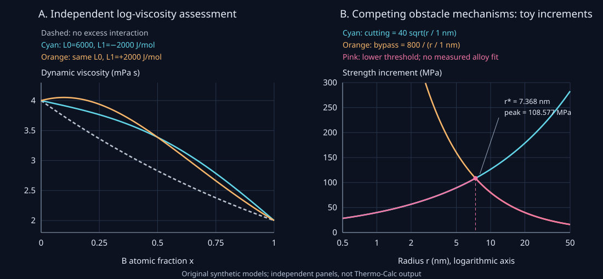

23. Material property models and strength
A phase-equilibrium calculation may identify the phases in a casting without predicting how easily its liquid fills a mold or how strongly the aged solid resists plastic flow. The missing information is different in each case. Volume and compressibility require a pressure-dependent thermodynamic potential. Viscosity requires a dissipative constitutive law. Yield strength also requires a definition of the test and a description of the microstructure.
1. What information belongs to a material-property record?
Let T>0 denote absolute temperature in kelvin, p pressure in pascals, and 0≤x≤1 the atomic fraction of component B in a binary material. For a selected phase, let g(T,p,x) be its molar Gibbs energy in joules per mole of atoms. At a fixed composition, its differential is dg=−s dT+v dp, where s is molar entropy and v is molar volume. These quantities describe changes among nearby equilibrium states of that phase.
The processing task also needs a dynamic liquid viscosity η, measured in Pa s. The loading task needs a yield stress σy, measured here in MPa, at specified temperature, strain rate and loading convention. A microstructure vector z can include grain diameter d, precipitate radii r, their amount and distribution, and matrix-solute concentration. A useful schematic record is
\[\mathcal M=\{g^{\phi}(T,p,x),\quad \eta^{\ell}(T,x),\quad \sigma_y^{s}(T,\dot\varepsilon,x,\boldsymbol z)\},\]where φ labels a phase, ℓ denotes liquid, s denotes solid, and \(\dot\varepsilon\) is the imposed strain rate in s⁻¹. This is a list of coupled models, rather than a claim that all three are derivatives of one scalar function. Equilibrium calculations can supply phase identities and partitioned compositions to a strength model. A precipitation calculation can supply a size distribution. Neither operation determines the strength coefficients without further physics or data.
The distinction is consistent with Kattner's discussion of phase-based properties: CALPHAD-style assessment extends to mobilities, volumes, elastic and nonthermodynamic properties through property-specific descriptions. Reusing an assessment architecture does not equate the properties being assessed. A material database must state which descriptions it actually contains.
2. Derive the pressure responses from the same potential
Work on one smooth, homogeneous phase branch at fixed composition. Define volumetric thermal expansivity αV, isothermal compressibility κT and isothermal bulk modulus KT by
\[v=g_p,\qquad \alpha_V=\frac1v\left(\frac{\partial v}{\partial T}\right)_{p,x} =\frac{g_{pT}}{g_p},\qquad \kappa_T=-\frac1v\left(\frac{\partial v}{\partial p}\right)_{T,x} =-\frac{g_{pp}}{g_p},\qquad K_T=\kappa_T^{-1}.\tag{23.1}\]Subscripts on g denote partial derivatives with the other displayed state variables fixed. The units are m³/mol for v, K⁻¹ for αV, Pa⁻¹ for κT and Pa for KT. Positive compressibility means increasing pressure decreases volume. Consequently a mechanically stable compressible branch with positive volume has gpp<0. The Gibbs energy is concave in pressure here; demanding positive pressure curvature would impose the wrong sign.
Thermal derivatives also constrain the description. With molar heat capacity \(C_p=-Tg_{TT}\), equality of the mixed derivatives of a twice-differentiable g gives
\[\left(\frac{\partial s}{\partial p}\right)_{T,x} =-\left(\frac{\partial v}{\partial T}\right)_{p,x}=-v\alpha_V.\tag{23.2}\]This Maxwell relation is a consistency check between thermal expansion and entropy. It is lost if independently fitted response functions are combined without an integrable potential. For an isotropically expanding body whose length scale is L, V is proportional to L³. Thus d ln V=3 d ln L and αV=3αL, where αL is linear expansivity. That factor of three does not make a single directional expansion coefficient represent an anisotropic crystal.
As a local construction, set T0=1000 K, p0=10⁵ Pa, q=p−p0, v0=10⁻⁵ m³/mol, α0=6×10⁻⁵ K⁻¹, κ0=10⁻¹¹ Pa⁻¹ and C0=25 J/(mol K). Choose
\[\begin{aligned} g_0(T)&=-C_0[T\ln(T/T_0)-T+T_0],\\ g(T,p)&=g_0(T)+v_0\left\{[1+\alpha_0(T-T_0)]q-\tfrac12\kappa_0q^2\right\}. \end{aligned}\tag{23.3}\]The logarithm is dimensionless. Differentiating the actual function, rather than assigning unrelated response curves, gives a volume factor \(b=1+\alpha_0(T-T_0)-\kappa_0q\):
\[v=v_0b,\quad \alpha_V=\alpha_0/b,\quad \kappa_T=\kappa_0/b, \quad K_T=b/\kappa_0,\quad C_p=C_0.\]At T=1100 K and q=1 GPa, b=0.996. The volume is 9.96×10⁻⁶ m³/mol, αV=6.024096×10⁻⁵ K⁻¹, κT=1.004016×10⁻¹¹ Pa⁻¹, and KT=99.6 GPa. The entropy-pressure derivative is −v0α0=−6×10⁻¹⁰ m³/(mol K). Centered numerical differences of (23.3) recover its volume and heat capacity in the program.
Mechanical positivity alone is not the full thermal stability check. Define Cv=T(∂s/∂T)v,x. Since dv=vαV dT−vκT dp, holding v fixed gives dp/dT=αV/κT. Substitution into ds=(Cp/T)dT−vαVdp yields
\[C_v=C_p-\frac{Tv\alpha_V^2}{\kappa_T}.\tag{23.4}\]The example gives Cv=21.04 J/(mol K), so both heat capacities and compressibility are positive at the chosen state. This quadratic construction is local. A positive-volume condition and these local checks do not justify extrapolating it to arbitrary pressure or temperature. An assessed equation of state must be tested over its intended range.
3. Separate missing thermodynamic information from extra constitutive information
A database that provides only g0(T,x) at a reference pressure has not supplied the information needed for every derivative in (23.1). The ambiguity can be proved. Two extensions
\[g_j(T,p,x)=g_0(T,x)+v_jq-\tfrac12v_j\kappa_jq^2, \qquad j=1,2,\]agree exactly at q=0 for every T and x, while their reference volumes vj and compressibilities κj can differ. Reference-pressure Gibbs data alone cannot distinguish them. Differentiating only the retained temperature expression and obtaining zero volume exposes an omitted model dependence; it is not evidence that the actual material occupies no volume.
The derivative must also correspond to the physical constraint. The formulas above hold composition fixed within a specified phase branch. If ordering variables relax, differentiate the correspondingly relaxed branch. If phases transform or their amounts change, the response of the equilibrated assemblage includes those changes. A first-order transition can produce discontinuous first derivatives. A smooth single-phase formula is not automatically the response of a two-phase specimen across that transition.
Viscosity presents a different ambiguity. In a Newtonian simple shear, let τ be shear stress in pascals and \(\dot\gamma\) the shear rate in s⁻¹. The constitutive equation τ=η\(\dot\gamma\) gives dissipated power density η\(\dot\gamma^2\), in W/m³. At positive temperature, any η>0 is compatible with nonnegative entropy production for this scalar law. Two positive viscosities can therefore share the same equilibrium Gibbs energy while producing different stresses at the same shear rate. Knowing g does not identify η.
“CALPHAD spirit” means organizing an assessment: define a phase-specific property model, collect relevant measurements or justified calculations, fit its parameters, and test its limiting and extrapolation behavior. It does not mean copying Gibbs interaction parameters into every other property. A transport coefficient must respect positivity and units. A strength model must additionally represent its test conditions and microstructure.
4. Assess log viscosity and expose an unidentifiable parameter
For a restricted temperature interval in one liquid phase, an Arrhenius model writes η=η0exp(E/RT). Here R is the molar gas constant, E an activation parameter in J/mol and η0 a positive prefactor in Pa s. A constant E and prefactor would make η0 its formal infinite-temperature limit; extrapolation of a fitted liquid law to that limit need not be physically valid. Neither parameter is fixed by the phase's equilibrium Gibbs function.
To write logarithms consistently, choose a reference viscosity ηref=1 Pa s and define Y=RT ln(η/ηref), which has units J/mol. Let x=xB and 1−x=xA. One binary Redlich–Kister construction is
\[Y(T,x)=(1-x)Y_A(T)+xY_B(T) +x(1-x)[L_0(T)+L_1(T)(1-2x)].\tag{23.5}\]The pure-component functions are Yi=Ei+RT ln(η0i/ηref). L0 and L1 are viscosity-assessment coefficients in J/mol, not excess Gibbs-energy coefficients. Inversion gives η=ηrefexp[Y/(RT)], ensuring positive η for finite Y and T>0. Endpoint factors make the interaction vanish at x=0 and x=1. Positivity does not bound the magnitude or validate extrapolation; extreme coefficients can also overflow a numerical exponential, so a production fit should operate in the log domain and enforce its assessed range.
At 1000 K, stipulate ηA=0.004 and ηB=0.002 Pa s, with L0=6000 and L1=−2000 J/mol. With no excess interaction, the equimolar prediction is the geometric mean √(ηAηB)=0.002828427 Pa s. Equation (23.5) multiplies it by exp[6000/(4RT)]=1.197706565, giving 0.003387626 Pa s. This geometric baseline is a chosen property representation, not a consequence of ideal-solution Gibbs thermodynamics.
The equimolar point cannot identify L1, because 1−2x=0 there. Infinitely many L1 values reproduce the same midpoint viscosity. For interior compositions define the measured reduced interaction
\[Z(x)=\frac{RT\{\ln[\eta(x)/\eta_{ref}] -(1-x)\ln[\eta_A/\eta_{ref}]-x\ln[\eta_B/\eta_{ref}]\}}{x(1-x)}. \]At fixed T, this two-parameter model gives Z(1/4)=L0+L1/2 and Z(3/4)=L0−L1/2. Thus their average identifies L0, and their difference identifies L1. The synthetic values 5000 and 7000 J/mol recover 6000 and −2000 exactly. Real measurements require uncertainty treatment and tests at additional compositions and temperatures; solving two exact equations is not statistical validation.
Dynamic and kinematic viscosity are different quantities. The latter is ν=η/ρ, where ρ is mass density in kg/m³. At the reference state, assign atomic molar masses 0.027 and 0.045 kg/mol and v=10⁻⁵ m³/mol. The equimolar density is 3600 kg/m³, so ν=9.410071×10⁻⁷ m²/s. A different density model changes ν even if the fitted dynamic viscosity is unchanged. Figure 23.1A displays the composition dependence and the midpoint ambiguity.
5. Transforming a property changes the averaging assumption
Lesson 58, 05:20–05:37, with an original transport comparison.
The logarithmic viscosity model illustrates a general choice: which quantity should be fitted? A fit to conductivity is different from a fit to its reciprocal, resistivity. Positivity and agreement at pure endpoints do not make the two interpolations equivalent.
Consider two layers with positive thermal conductivities k1 and k2, in W/(m K), occupying fractions f and 1−f. For heat paths parallel to the layers, both see the same temperature gradient. Adding their Fourier heat fluxes gives kparallel=fk1+(1−f)k2. For layers in series, the same steady heat flux crosses each layer, while their temperature drops add. The total thermal resistance then gives
\[k_{series}=\left(\frac{f}{k_1}+\frac{1-f}{k_2}\right)^{-1}.\tag{23.6}\]At f=1/2, k1=100 and k2=10, the parallel and series results are 55 and 18.181818 W/(m K). These are two declared geometries, not two interchangeable calculations of one unspecified composite. Nor are they derivations of the conductivity of a homogeneous disordered alloy from its atomic fractions. The comparison shows why a property transformation and mixing rule require a physical or empirical justification.
A positive fitted scalar may also suppress directional information. A single conductivity cannot represent every crystal or textured aggregate, just as a scalar yield stress does not define an entire anisotropic yield surface. Before fitting coefficients, decide whether the intended observable is a phase property, a directional response or a specimen-level effective property. The database field and its calibration data must refer to the same object.
6. Endmember strength is a constitutive reference, not a Gibbs derivative
Yield strength denotes the stress associated with a specified onset-of-plastic-flow convention and test conditions. It is not determined by differentiating a bulk g(T,p,x) with respect to composition or pressure. A model can nevertheless organize strength coefficients using the same sublattice bookkeeping used for thermodynamic descriptions.
Consider the formal two-sublattice phase (Fe,Ti)1(C,Va)1. Va denotes an empty interstitial site, not an atom. Let yTi be the Ti site fraction on the first sublattice and yC the occupied-carbon fraction on the second. Their complementary fractions are yFe=1−yTi and yVa=1−yC. One endmember interpolation is
\[\sigma_{int}=\sum_{i\in\{Fe,Ti\}}\sum_{j\in\{C,Va\}} y_i^{(1)}y_j^{(2)}\sigma_{i:j}.\tag{23.7}\]The four coefficients σi:j have stress units. They are reference values assigned to formal endmembers of the chosen phase model. A hypothetical endmember need not be a stable bulk phase under the test conditions. This use of “intrinsic” does not identify an ideal defect-free crystal's theoretical strength, nor guarantee that a measured reference value contains no microstructural strengthening.
The weights sum to one because their sum factors into the product of the two site-fraction sums. For nonnegative site fractions, (23.7) is a convex combination: its value lies between the smallest and largest reference coefficients. This boundedness is a property of the interpolation, not proof that it accurately describes a material.
Assign invented coefficients of 50, 100, 200 and 500 MPa to Fe:Va, Ti:Va, Fe:C and Ti:C, respectively. At yTi=0.2 and yC=0.1 their weights are 0.72, 0.18, 0.08 and 0.02. The result is 36+18+16+10=80 MPa. The actual Thermo-Calc 2024a model release description documents an endmember reference formulation for intrinsic strength. It supports the representation's role; it does not supply or validate these invented coefficients.
Site fractions are not automatically atomic fractions. For sublattice site counts a and b per formula unit, the number of atoms is a+b yC. Therefore
\[x_C=\frac{b y_C}{a+b y_C},\qquad x_{Ti}=\frac{a y_{Ti}}{a+b y_C}.\tag{23.8}\]With a=b=1, the example has xC=0.090909091 and xTi=0.181818182. Counting vacancies as atoms, or inserting nominal atomic fractions as the y values, changes the model being evaluated. The same composition-basis discipline is needed when connecting equilibrium phase compositions to mechanical-property inputs.
7. Add mechanisms only under an explicit bookkeeping rule
Hold temperature, strain rate and loading convention fixed for the numerical strength examples. A possible constitutive decomposition is
\[\sigma_y=\sigma_{int}+\Delta\sigma_{gb}+\Delta\sigma_{ss} +\Delta\sigma_{ppt}+\sigma_{user}.\tag{23.9}\]The increments denote grain-boundary, solid-solution and precipitation strengthening; σuser is an explicitly supplied additional term. Equation (23.9) is a superposition assumption. Two stipulated 100 MPa increments give 200 MPa under a linear rule but 141.421356 MPa under a root-sum-square rule. Neither number becomes correct merely by calling the mechanisms separate. Their interaction and the fitted reference state must justify the chosen rule.
For a Hall–Petch grain-size contribution, use Δσgb=kHP/√d, where d is grain diameter in meters and kHP has units MPa√m. A fit with kHP=0.08 MPa√m gives 16 MPa at d=25 μm and 8 MPa at 100 μm. The square-root dependence is a constitutive model over an assessed grain-size regime. Taking its d→0 divergence as a physical prediction would ignore changes in deformation mechanisms.
A scalar solute law also needs its own contract. For illustration, stipulate Δσss=A cm2/3, with A=400 MPa and cm a dimensionless matrix-solute atomic fraction. At cm=0.02 this gives 29.472252 MPa. Inserting a nominal bulk fraction 0.04 instead gives 46.784284 MPa. Phase partitioning can therefore affect a strength prediction even before a mechanical coefficient changes. The exponent and coefficient in this construction are assumed, not asserted as universal or as current software defaults.
For an independent scalar-strength example, assign σint=80 MPa, numerically the value of the endmember check, together with d=25 μm and cm=0.02. These inputs do not assert the same composition as the formal Fe–Ti–C interpolation. The 16 MPa grain and 29.472252 MPa solute increments give a stipulated linear baseline of 125.472252 MPa before precipitation; set σuser=0. If reference data already included the same grain or solute contribution, adding it again would double count it.
The inspected 2026b yield-strength interface exposes separate model choices and microstructure inputs. That is an implementation reminder that compositions, grain sizes, precipitate information and conditions are additional inputs. A menu of contributions cannot establish their accuracy for every alloy or loading regime.
8. A peak can arise from competing dislocation paths
A precipitate is a second-phase particle in a matrix. A dislocation can cut through a sufficiently shearable particle or bow around it and leave a loop, the Orowan bypass process. A coherent particle preserves lattice continuity across its interface; coherency strain, elastic mismatch and ordering can all affect a cutting threshold. These are distinct from the equilibrium condition that the precipitate phase is permitted to exist.
The two routes can have opposite size dependence at fixed precipitate volume fraction. One cutting contribution may rise with radius. For bypass, a line-tension balance gives a stress scale proportional to line tension divided by Burgers-vector magnitude and obstacle spacing. If spacing scales with radius at fixed fraction, that stress falls roughly as 1/r, apart from factors such as logarithmic corrections. This reasoning motivates a reduced example; it is not the complete theory of either route.
Let u=r/r0, with r0=1 nm. Stipulate tensile-strength increments
\[\Delta\sigma_{cut}=C\sqrt{u},\qquad \Delta\sigma_{bypass}=D/u,\qquad \Delta\sigma_{ppt}=\min(\Delta\sigma_{cut},\Delta\sigma_{bypass}),\tag{23.10}\]where C=40 MPa and D=800 MPa. The lower threshold represents selection between two available paths in this monodisperse construction; it is different from adding independent strengthening terms. C and D absorb the fixed fraction and other assumed factors. No aging kinetics or measured alloy parameters have been supplied.
The intersection solves C u1/2=D/u, hence u3/2=D/C. Below it the lower branch rises; above it the lower branch falls. It is therefore the maximum of this envelope:
\[r_*=r_0(D/C)^{2/3}=7.368062997\ {\rm nm},\qquad \Delta\sigma_*=C^{2/3}D^{1/3}=108.576705\ {\rm MPa}.\tag{23.11}\]The numerical baseline above would give a total of 234.048957 MPa at this synthetic crossover. Figure 23.1B shows the branches and their lower envelope. The kink records a sharp mechanism-selection idealization; an actual particle population need not have such a sharp transition.

The 2002 Al–Sc study by Seidman, Marquis and Dunand, in its room-temperature discussion, distinguishes cutting from bypass and notes that a broad particle-size distribution complicates the peak region. Its measured microstructures and model comparisons supply physical evidence for considering those mechanisms. They do not calibrate the coefficients of (23.10), whose crossover is deliberately independent of that study.
Even elementary operations show why a mean radius may be insufficient. Take two radii, 2 and 20 nm, with equal weights. Applied to (23.10), the average of the local lower thresholds is 48.284271 MPa. Taking the smaller of the two averaged branch thresholds gives 117.726990 MPa, while evaluating the lower envelope at the mean radius 11 nm gives 72.727273 MPa. These three operations are mathematically different.
For any nonnegative weights wi summing to one, \(\min(a_i,b_i)\le a_i\) and \(\min(a_i,b_i)\le b_i\). Multiplying by wi and summing proves
\[\sum_iw_i\min(a_i,b_i)\le \min\!\left(\sum_iw_i a_i,\sum_iw_i b_i\right).\tag{23.12}\]This is an algebraic counterexample to exchanging averaging and mechanism selection. The weights here define a mathematical average, not a derived homogenization law for dislocation motion. A physical population model must specify number or volume measures, obstacle geometry and how dislocations sample the distribution. Equation (23.12) does not decide that model.
9. Interpret the comparison as a test of a declared model
A strength-versus-radius plot can test a model only when the measured quantity and specimen history match its inputs. Yield stress, microhardness and high-temperature creep resistance are different observables. A comparison must also specify phase fractions, matrix composition, grain structure, temperature and the definition of radius. A better fit on one displayed curve does not establish transfer to another composition or deformation regime.
The recording's Al–Sc example compares variants with experimental points. Its precise file settings and plotted values are not reproduced here. The versioned 2022a release note, printed page 13 identifies a Seidman model in an Al–Sc precipitation example; the current interface also names Seidman and Simplified options. This corroborates a documented model name despite uncertain ASR wording, without proving which exact configuration appears on screen.
The assessment task is consequently to preserve separate records for thermodynamic functions, property coefficients, microstructure and validation conditions. In the running example, pressure data determine the response extension, viscosity data determine L0 and L1, and mechanical data determine reference strengths and strengthening laws. Held-out compositions and temperatures test transfer; held-out microstructures test whether the state description is adequate. Numerical agreement with the program below checks the stated constructions, while independent physical evidence is needed to judge a material prediction.
10. Reproduce the mathematical material record
Run the exact standard-library program with Python 3.13 from the book root. It evaluates (23.3) and independent numerical derivatives, reconstructs L0 and L1, checks endpoint and midpoint behavior, and evaluates the declared mechanical constructions. The viscosity temperature extension uses constant activation parameters EA=20 and EB=15 kJ/mol, with its pure viscosities fixed at the stated 1000 K values. The figures use that same temperature.
The program writes no files and needs no proprietary engine or assessed database. It rejects out-of-range compositions, nonpositive temperatures or radii, and states outside its positive-volume/positive-Cv local domain. Assertions test the stated derivatives, balances and crossover. Its printed residuals are numerical checks of these constructions, not error bars for an actual material assessment. The separate figure generator writes the original analytic SVG from its documented constants.
"""Synthetic property assessments and strength checks; no real alloy fit.
Run with Python 3.13. Inputs are stated teaching parameters in SI units,
except the explicitly labelled MPa/nm strength model. No files are written.
"""
from math import exp, isclose, log, sqrt
GAS_R = 8.31446261815324
T0, P0 = 1000.0, 1e5
V0, ALPHA0, KAPPA0, CP = 1e-5, 6e-5, 1e-11, 25.0
def gibbs(temperature, pressure):
if temperature <= 0:
raise ValueError("Positive temperature required")
q = pressure - P0
thermal = -CP * (temperature * log(temperature / T0) - temperature + T0)
return thermal + V0 * (
(1 + ALPHA0 * (temperature - T0)) * q - KAPPA0 * q * q / 2
)
def response(temperature, pressure):
if temperature <= 0:
raise ValueError("Positive temperature required")
factor = 1 + ALPHA0 * (temperature - T0) - KAPPA0 * (pressure - P0)
if factor <= 0:
raise ValueError("Outside positive-volume domain of the local model")
volume = V0 * factor
alpha, kappa = ALPHA0 / factor, KAPPA0 / factor
cv = CP - temperature * volume * alpha * alpha / kappa
if cv <= 0:
raise ValueError("Outside thermal-stability domain of the local model")
return volume, alpha, kappa, 1 / kappa, cv
volume, alpha, kappa, modulus, cv = response(1100.0, P0 + 1e9)
hp, ht = 1e6, 0.1
vp_fd = (gibbs(1100.0, P0 + 1e9 + hp) - gibbs(1100.0, P0 + 1e9 - hp)) / (
2 * hp
)
gpp_fd = (
gibbs(1100.0, P0 + 1e9 + hp)
- 2 * gibbs(1100.0, P0 + 1e9)
+ gibbs(1100.0, P0 + 1e9 - hp)
) / (hp * hp)
cp_fd = (
-1100
* (
gibbs(1100 + ht, P0 + 1e9)
- 2 * gibbs(1100.0, P0 + 1e9)
+ gibbs(1100 - ht, P0 + 1e9)
)
/ (ht * ht)
)
assert isclose(vp_fd, volume, rel_tol=1e-9)
assert isclose(-gpp_fd / volume, kappa, rel_tol=1e-6)
assert isclose(cp_fd, CP, rel_tol=1e-5)
print(f"Local molar volume at 1100 K, pressure increment 1 GPa: {volume:.9e}")
print(f"Volumetric expansivity and compressibility: {alpha:.9e}, {kappa:.9e}")
print(
f"Isothermal bulk modulus and Cv: {modulus/1e9:.6f} GPa, "
f"{cv:.6f} J/(mol K)"
)
print(f"Finite-difference volume and Cp: {vp_fd:.9e}, {cp_fd:.6f}")
print(f"Maxwell entropy-pressure derivative: {-V0*ALPHA0:.9e} m3/(mol K)")
# Independent log-viscosity model: x is B atomic fraction in the liquid.
ETA_A, ETA_B = 0.004, 0.002 # Pa s at T0
E_A, E_B = 20000.0, 15000.0 # J/mol
L0, L1 = 6000.0, -2000.0 # J/mol; not Gibbs interaction parameters
def viscosity(x, temperature=T0, l0=L0, l1=L1):
if not 0 <= x <= 1 or temperature <= 0:
raise ValueError("Require composition in [0,1] and temperature > 0")
ya = log(ETA_A) + E_A / GAS_R * (1 / temperature - 1 / T0)
yb = log(ETA_B) + E_B / GAS_R * (1 / temperature - 1 / T0)
interaction = x * (1 - x) * (l0 + l1 * (1 - 2 * x)) / (GAS_R * temperature)
return exp((1 - x) * ya + x * yb + interaction)
def reduced_interaction(x):
pure = (1 - x) * log(ETA_A) + x * log(ETA_B)
return GAS_R * T0 * (log(viscosity(x)) - pure) / (x * (1 - x))
eta_mid = viscosity(0.5)
assert isclose(viscosity(0), ETA_A, rel_tol=1e-14)
assert isclose(viscosity(1), ETA_B, rel_tol=1e-14)
assert isclose(viscosity(0.5, l1=1e6), eta_mid, rel_tol=1e-14)
d25, d75 = reduced_interaction(0.25), reduced_interaction(0.75)
fit0, fit1 = (d25 + d75) / 2, d25 - d75
assert isclose(fit0, L0, abs_tol=1e-8)
assert isclose(fit1, L1, abs_tol=1e-8)
rho_ref = (0.027 + 0.045) / 2 / V0 # Reference equimolar mass/volume: kg/m3
print(
f"Viscosity at x=.25, .5, .75: {viscosity(.25):.9f}, "
f"{eta_mid:.9f}, {viscosity(.75):.9f} Pa s"
)
print(
f"Equimolar no-excess viscosity and multiplier: "
f"{sqrt(ETA_A*ETA_B):.9f}, {eta_mid/sqrt(ETA_A*ETA_B):.9f}"
)
print(f"Two-composition reconstructed L0, L1: {fit0:.6f}, {fit1:.6f} J/mol")
print(
f"Reference density and kinematic viscosity: "
f"{rho_ref:.6f} kg/m3, {eta_mid/rho_ref:.9e} m2/s"
)
# Same local conductivities, different imposed one-dimensional geometry.
k_parallel, k_series = 0.5 * 100 + 0.5 * 10, 1 / (0.5 / 100 + 0.5 / 10)
print(
f"Parallel/series thermal conductivity: "
f"{k_parallel:.6f}, {k_series:.6f} W/(m K)"
)
# (Fe,Ti)1(C,Va)1: hypothetical endmember strengths, not measured values.
y_ti, y_c = 0.2, 0.1
weights = (
(1 - y_ti) * (1 - y_c),
y_ti * (1 - y_c),
(1 - y_ti) * y_c,
y_ti * y_c,
)
endmember = (50.0, 100.0, 200.0, 500.0) # Fe:Va, Ti:Va, Fe:C, Ti:C in MPa
intrinsic = sum(w * s for w, s in zip(weights, endmember))
assert isclose(sum(weights), 1.0, abs_tol=1e-15)
x_c, x_ti = y_c / (1 + y_c), y_ti / (1 + y_c)
print("Endmember weights: " + ", ".join(f"{w:.6f}" for w in weights))
print(
f"Intrinsic strength and atomic C/Ti fractions: "
f"{intrinsic:.6f} MPa, {x_c:.9f}, {x_ti:.9f}"
)
# These additional constitutive choices are independent teaching parameters.
grain_size, hp_coefficient = 25e-6, 0.08 # m and MPa sqrt(m)
matrix_solute, ss_coefficient = 0.02, 400.0 # atomic fraction and MPa
gb_strength = hp_coefficient / sqrt(grain_size)
ss_strength = ss_coefficient * matrix_solute ** (2 / 3)
base_strength = intrinsic + gb_strength + ss_strength
print(
f"Grain and matrix-solute increments: "
f"{gb_strength:.6f}, {ss_strength:.6f} MPa"
)
print(f"Linear baseline without precipitation: {base_strength:.6f} MPa")
print(
f"Using bulk solute .04 instead of matrix .02 gives: "
f"{ss_coefficient*.04**(2/3):.6f} MPa"
)
# Stipulated constant-volume-fraction cutting/bypass envelope, radius in nm.
CUT, BYPASS = 40.0, 800.0 # Both coefficients in MPa; u = r/(1 nm)
def increments(radius_nm):
if radius_nm <= 0:
raise ValueError("Positive radius required")
return CUT * sqrt(radius_nm), BYPASS / radius_nm
critical = (BYPASS / CUT) ** (2 / 3)
peak = CUT * sqrt(critical)
assert isclose(*increments(critical), rel_tol=1e-14)
assert min(increments(critical / 2)) < peak
assert min(increments(2 * critical)) < peak
print(f"Toy crossover radius and increment: {critical:.9f} nm, {peak:.6f} MPa")
print(f"Toy total strength at the crossover: {base_strength+peak:.6f} MPa")
local = [increments(r) for r in (2.0, 20.0)]
average_minimum = sum(min(pair) for pair in local) / 2
minimum_average = min(sum(pair[i] for pair in local) / 2 for i in (0, 1))
mean_radius_value = min(increments(11.0))
assert average_minimum <= minimum_average
print(
f"Distribution operation checks, average(min), min(average), "
f"min(at mean r): {average_minimum:.6f}, {minimum_average:.6f}, "
f"{mean_radius_value:.6f} MPa"
)
print(
f"Two stipulated 100 MPa increments: linear={200.:.6f}, "
f"quadrature={sqrt(100**2+100**2):.6f} MPa"
)
Local molar volume at 1100 K, pressure increment 1 GPa: 9.960000000e-06 Volumetric expansivity and compressibility: 6.024096386e-05, 1.004016064e-11 Isothermal bulk modulus and Cv: 99.600000 GPa, 21.040000 J/(mol K) Finite-difference volume and Cp: 9.960000000e-06, 24.999999 Maxwell entropy-pressure derivative: -6.000000000e-10 m3/(mol K) Viscosity at x=.25, .5, .75: 0.003765057, 0.003387626, 0.002785121 Pa s Equimolar no-excess viscosity and multiplier: 0.002828427, 1.197706565 Two-composition reconstructed L0, L1: 6000.000000, -2000.000000 J/mol Reference density and kinematic viscosity: 3600.000000 kg/m3, 9.410071491e-07 m2/s Parallel/series thermal conductivity: 55.000000, 18.181818 W/(m K) Endmember weights: 0.720000, 0.180000, 0.080000, 0.020000 Intrinsic strength and atomic C/Ti fractions: 80.000000 MPa, 0.090909091, 0.181818182 Grain and matrix-solute increments: 16.000000, 29.472252 MPa Linear baseline without precipitation: 125.472252 MPa Using bulk solute .04 instead of matrix .02 gives: 46.784284 MPa Toy crossover radius and increment: 7.368062997 nm, 108.576705 MPa Toy total strength at the crossover: 234.048957 MPa Distribution operation checks, average(min), min(average), min(at mean r): 48.284271, 117.726990, 72.727273 MPa Two stipulated 100 MPa increments: linear=200.000000, quadrature=141.421356 MPa
11. Exercises with complete solutions
1. Derive the response functions and check their signs
Derive (23.1) and the Maxwell relation. Evaluate the local potential at 1100 K and q=1 GPa, and find the isotropic linear expansivity.
Solution
From dg=−s dT+v dp at fixed composition, gp=v and gT=−s. Differentiating v gives gpT and gpp; division by v produces αV and −κT, respectively. Equality gTp=gpT gives (∂s/∂p)T=−vαV. The example's factor is 1+0.006−0.01=0.996. Hence v=9.96×10⁻⁶ m³/mol, αV=6×10⁻⁵/0.996, κT=10⁻¹¹/0.996 and KT=99.6 GPa. Since gpp=−v0κ0<0 and v>0, κT>0. For isotropic expansion αL=αV/3=2.008032×10⁻⁵ K⁻¹; no single scalar division supplies three different anisotropic directional coefficients.
2. Check thermal consistency and identify missing pressure information
Derive Cp−Cv for the stated branch. Can perfect knowledge of g(T,p0,x) identify its reference volume or compressibility?
Solution
At fixed v, dv=vαVdT−vκTdp=0 gives dp/dT=αV/κT. Using ds=(Cp/T)dT−vαVdp and multiplying its fixed-v derivative by T gives Cv=Cp−TvαV²/κT. For the toy potential this subtraction is Tv0α0²/κ0=3.96 J/(mol K), so Cv=21.04. To establish nonidentifiability of pressure responses, add either v1q−v1κ1q²/2 or v2q−v2κ2q²/2 to the same reference g. Both additions vanish at q=0, but their first and second pressure derivatives differ. Additional volume or pressure-response evidence is therefore necessary.
3. Recover the binary viscosity prediction and its units
Evaluate the equimolar viscosity and kinematic viscosity at the reference state. Why must the logarithm contain a reference viscosity?
Solution
At x=1/2, the L1 term vanishes and the excess Y is L0/4=1500 J/mol. Consequently η=√(0.004×0.002)exp[1500/(R×1000)]=0.003387626 Pa s. The reference equimolar mass per mole is (0.027+0.045)/2=0.036 kg/mol; division by 10⁻⁵ m³/mol gives ρ=3600 kg/m³. Thus ν=η/ρ=9.410071×10⁻⁷ m²/s. The argument η/ηref is dimensionless. A change of viscosity units must be accompanied by the same change in ηref; otherwise the logarithmic model's intercept would change without representing a physical effect.
4. Design observations that identify both interaction parameters
Why is an exact equimolar measurement insufficient? Invert the two-composition construction and identify an important limitation of measurements near a pure endpoint.
Solution
At x=1/2 the derivative of Y with respect to L1 is x(1−x)(1−2x)=0, so that observation is unchanged for every L1. At x=1/4 and 3/4 the reduced observations are Z1=L0+L1/2 and Z2=L0−L1/2. Adding gives L0=(Z1+Z2)/2; subtracting gives L1=Z1−Z2. Values 5000 and 7000 J/mol recover 6000 and −2000. Near an endpoint, Z divides the residual by the small factor x(1−x), amplifying measurement and pure-reference errors. A real assessment should analyze the design and uncertainty, then test predictions at compositions not used to determine the coefficients.
5. Explain the conductivity discrepancy without choosing a universal mixing rule
Derive both results for equal amounts of materials with conductivities 100 and 10 W/(m K). Does one invalidate the other?
Solution
For parallel heat paths the temperature gradient is common, so adding area-weighted fluxes gives (100+10)/2=55 W/(m K). In series the steady flux is common; the temperature drops are proportional to f/k1 and (1−f)/k2, giving [0.5/100+0.5/10]⁻¹=18.181818 W/(m K). The boundary-value problems differ, so their disagreement is expected. It does not license assigning either formula to a homogeneous alloy without a property model or to an unspecified three-dimensional aggregate without geometric information.
6. Keep sublattice and atomic composition bases separate
Compute the four strength weights and the atomic fractions. If a=b=1 and a measured atomic carbon fraction is 0.1, what carbon site fraction must be inserted?
Solution
The weights are (1−0.2)(1−0.1)=0.72, 0.2(1−0.1)=0.18, (1−0.2)0.1=0.08 and 0.2×0.1=0.02. Their coefficient-weighted sum is 80 MPa, and their sum is one. One formula unit contains 1+0.1=1.1 atoms because vacancies contribute no atoms. Hence xC=0.1/1.1 and xTi=0.2/1.1. For a specified xC=0.1, solve xC=yC/(1+yC): yC=xC/(1−xC)=1/9, not 0.1. The strength interpolation must receive the site fraction required by its model, rather than the same numeral on another composition basis.
7. Audit the grain-size units, solute input and addition rule
Evaluate the two scalar increments, identify the grain-unit error, and explain the double-counting risk.
Solution
Convert 25 μm to 25×10⁻⁶ m before using kHP=0.08 MPa√m. Its square root is 0.005√m, giving 16 MPa. Inserting the numeral 25 without conversion gives only 0.016 MPa, a factor of 1000 smaller. Equivalently the coefficient is 80 MPa√μm if grain diameter is entered in micrometers. The assumed solute law gives 400(0.02)2/3=29.472252 MPa; using bulk 0.04 would instead give 46.784284 MPa. With an independently assigned 80 MPa reference and linear addition, the baseline is 125.472252 MPa. It is valid only as the declared constitutive construction. If the reference measurement already included the same grain or solute increment, adding it again repeats the contribution. A different calibrated combination rule can also change the prediction.
8. Prove that the reduced precipitation model has a peak
Find the unique crossover, its increment and the illustrative total strength. State what is not learned about an aging schedule.
Solution
For u>0, C√u grows monotonically while D/u decreases. Equality implies u3/2=D/C, so u*=(D/C)2/3. On the left the smaller branch is C√u; on the right it is D/u. Thus the lower envelope has its global maximum at u*. At C=40 and D=800 MPa with r0=1 nm, r*=7.368062997 nm and Δσ*=108.576705 MPa. Adding the stipulated 125.472252 MPa baseline gives 234.048957 MPa. The calculation does not tell when a material reaches that radius or whether its volume fraction remains fixed. Nucleation, growth, coarsening and temperature-dependent coefficients are additional models and inputs.
9. Test whether a mean radius can replace a distribution
Evaluate the three operations for equally weighted 2 and 20 nm particles. Prove the averaging inequality and state its physical limit.
Solution
At 2 nm the cutting/bypass thresholds are 56.568542 and 400 MPa; at 20 nm they are 178.885438 and 40 MPa. Averaging their local minima gives (56.568542+40)/2=48.284271 MPa. Averaging the cutting branch gives 117.726990 MPa and the bypass branch 220 MPa, whose minimum is 117.726990 MPa. The mean radius is 11 nm; applying the envelope there gives min(40√11,800/11)=72.727273 MPa. For general nonnegative normalized weights, each local minimum is no larger than either branch; weighted summation therefore lies below both branch averages and hence below their minimum. This proves (23.12). It does not prove that a real yield stress is the average of local obstacle thresholds. A physical dislocation/population model must specify its sampling and collective response, then be assessed against appropriate mechanical data.
Source scope: the full lesson 58 local machine transcript supplies the topic sequence. The uncertain comparator name is corroborated only to the extent stated by versioned official documentation. The selected thermophysical-property discussion, endmember release description and Al–Sc room-temperature mechanisms support their cited roles; no complete software, literature or audiovisual audit is implied. All numerical results and the figure here are original mathematical constructions with explicit parameters.
A useful property database connects equilibrium, transport and mechanics through explicit interfaces. It specifies which derivatives exist, which coefficients were assessed independently, and which microstructural inputs a prediction requires. Those distinctions make a successful calculation interpretable and identify the new data needed when it fails.